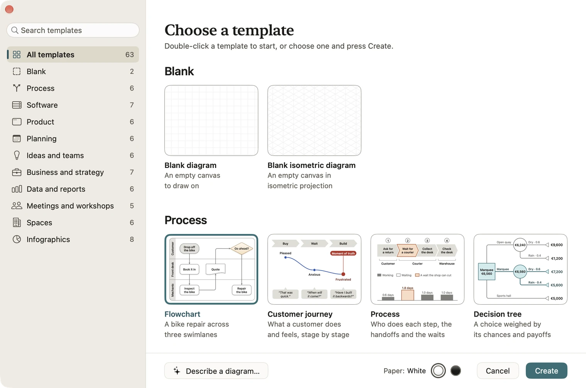
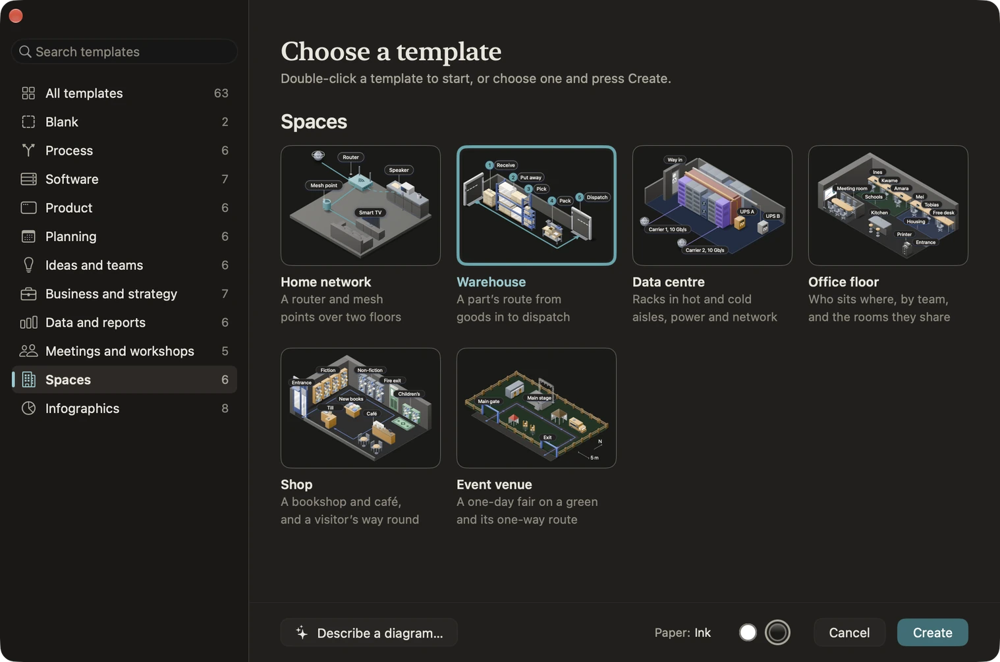

Templates
A template is a finished example diagram you start from: a flowchart with its swimlanes, a roadmap with its quarters, an office floor with its desks. Diagrove has 63 of them in ten categories, plus a blank diagram and a blank isometric diagram. Everything in a template is yours to change.
Open the gallery
- On the Mac, choose File › New from template… (Shift-Command-N), or All templates… in the Welcome window. The Welcome window also shows six starters of its own: Flowchart, System architecture, App screen, Mind map, Roadmap and Org chart.
- On iPad, choose Choose a template on the start screen.
On the Mac, double-click a template, or select it and press Return or click Create. Press Space to see the selected template large; the Left and Right Arrow keys step to the one before or after. On iPad, tap a template to start from it, or touch and hold one to see it large, with Create in its menu.

Categories
The gallery’s sidebar lists All templates, then each category with how many templates it holds, and last Your templates. Choose one to see it alone. On iPad the sidebar shows in a wide sheet; in a narrow window it becomes a menu above the cards.
Each card has the template’s name and a line on what it shows, such as “A bike repair across three swimlanes” for Flowchart. Every template has a page in the template gallery, with pictures of it on both papers and what’s in it.
Search
Type in Search templates (Command-F on the Mac). Search looks at the names, the lines under them and the categories, and at the names people give each kind of diagram, so “gantt chart” finds Project plan. It searches every category at once and says how many match, best first, with the best one selected, so Return makes it.
When nothing matches, the gallery offers to describe it instead: Describe “…”… opens a new diagram with your search in the prompt bar, ready for Diagrove to draw a first version. Clear search goes back to the cards. Press Esc to clear a search; on the Mac, Esc in an empty search closes the gallery.
Paper
Every template comes on White or Ink paper. Choose Paper in the gallery’s footer (on iPad, at the foot of the sidebar or under the cards) and the cards show the paper you chose. It’s one choice for the whole app: new diagrams start on it, from the gallery, the Welcome window and New diagram alike, until you change it. A document keeps its paper in light and dark appearance, and you can change a canvas’s paper later in the inspector.
What you get
Creating from a template opens a new document, named after the template: “Flowchart”, then “Flowchart 2”. It has no history to undo, so you start clean. On iPad it’s saved as a file straight away, beside the last document you opened, or else in Diagrove’s folder in iCloud Drive or on your iPad.
What’s inside is ordinary Diagrove: shapes, lines, groups and stencil instances, in palette colours. Change the words, move things, retint a stencil, delete what you don’t need, or ask the prompt bar for changes such as “rename Cart to Basket”. Some templates have more than one canvas, such as App screen.
App screen is a template that plays: it opens with a notice, “This diagram plays. Press Play to try it.” Choose Play in the toolbar (Option-Command-P on the Mac) and click through its screens; press Esc, or tap Stop on iPad, to go back to editing.
Your templates
To start new diagrams from one of your own, open it and choose File › Save as template… (on iPad, Save as template… in the toolbar’s Export menu). Give it a name and, if you like, a short line on what it’s for, then click Save. It appears in the gallery under Your templates, the last category, on its own paper; it isn’t in All templates or search. A card’s menu has Create, Rename…, Show in Finder on the Mac, and Delete, with Undo in the notice. Your templates stay on the Mac or iPad you saved them on.
The Spaces templates
The Spaces templates are isometric scenes, built from the isometric stencils at true scale, so they’re a quick way to see what an isometric canvas can do and a good place to start your own.
- Home network: a router and mesh points over two floors.
- Warehouse: a part’s route from goods in to dispatch.
- Data centre: racks in hot and cold aisles, with power and network.
- Office floor: who sits where, by team, and the rooms they share.
- Shop: a bookshop and café, and a visitor’s way round.
- Event venue: a one-day fair on a green, with its one-way route.
System architecture and Order fulfilment are isometric too, as is the blank isometric diagram. See Isometric canvases.

Related
- Getting started: the Welcome window and the iPad start screen.
- Stencils and tints: the stencils templates are made of.
- The prompt bar: change a template in words.